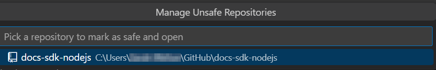

Create a New Working Branch
Before you start making any changes to the files in a Couchbase Documentation repository, you must create a new branch for your work.
For a quick overview on some terminology and concepts related to GitHub repositories, see About repositories in the GitHub Documentation.
You can create branches from:
-
The command line
First, make sure you choose the right base branch for your work.
Choose the Right Base Branch
The branch you choose as your base branch sets the source of truth for your new documentation.
Every Couchbase Documentation repository has 1 or more configured base branches that we use to build the documentation. Usually, you should choose one of these configured base branches as your base branch for your working branch.
For example, the Couchbase Capella documentation has a single base branch, main.
Some other documentation repositories still use master as their base branch.
Couchbase Server, Couchbase Mobile, and the Couchbase SDKs use release/x.x branches to organize the documentation according to the product version it describes.
The single base branch or release/x.x branches for the latest few releases of a product are the only branches that get built into the main Couchbase Documentation site.
We use working branches to keep changes separate and easier to reconcile, especially with multiple people working on the same files. Working branches should try to aim to solve a single issue at a time.
Typically, you should:
-
Choose the
main,master, or appropriaterelease/x.xbranch for your changes.For example, if an issue or a fix only relates to the 7.0 version of a product, then you should base your working branch on
release/7.0. -
Name your working branch based on the ticket number for the issue.
-
Create a pull request (PR) for your working branch that targets your original base branch.
If you’re ever unsure about the correct branch to use for an issue:
-
Look for the Affects versions field on your assigned ticket
-
Ask another member of the Documentation team
-
Check that the repository does not require special handling
Create a Working Branch in VS Code
Before you can create a new working branch in VS Code, make sure you have:
To create a new working branch in VS Code:
-
Start VS Code.
-
On the Welcome tab, click Open Folder.
-
Select the folder on your computer where you cloned the Documentation repository.
-
Click Select Folder.
-
Click Source Control.
VS Code might prompt you that the repository has been marked as unsafe:
-
Click Manage Unsafe Repositories and select the repository to continue:
 -
Point to the Source Control label and click … (More Actions…):
-
Click Checkout to….
-
Choose the correct base branch for your new working branch.
You can select it from the list of branches or type to search for the correct branch. If this is the first time you’re choosing your base branch, the branch name must be prefixed with
origin/. -
To get the latest copy of any changes on your base branch, click Sync Changes.
-
Point to the Source Control label again and click … (More Actions…).
-
Go to .
-
Enter a name for your new working branch.
Start with the name of your ticket, if you have one. Provide a few words, separated by dashes (
-) to describe the changes on the branch. Try to stick to 3-5 words. -
Press Enter.
-
Click Publish Branch.
Now you can add or edit new pages in your new branch.
Create a Working Branch from the Command Line
Before you can create a new working branch using the command line, make sure you have:
To create a new working branch from the command line:
-
Open your terminal.
-
Navigate into the directory on your computer that contains the Documentation repository you want to work with:
$ cd <path/to/repository> -
Choose the correct base branch for your new working branch. After you know the correct branch name, enter the following command to check out the branch:
$ git checkout <name-of-base-branch> -
Run a pull to make sure you have downloaded the latest changes from the branch:
$ git pull upstream <name-of-base-branch> -
Use the same checkout command with the
-bflag to create a new branch from the base branch and check it out:$ git checkout -b <name-of-new-working-branch>Start your branch name with the name of your ticket, if you have one. Provide a few words, separated by dashes (
-) to describe the changes on the branch. Try to stick to 3-5 words.
Now you can add or edit new pages in your new branch.